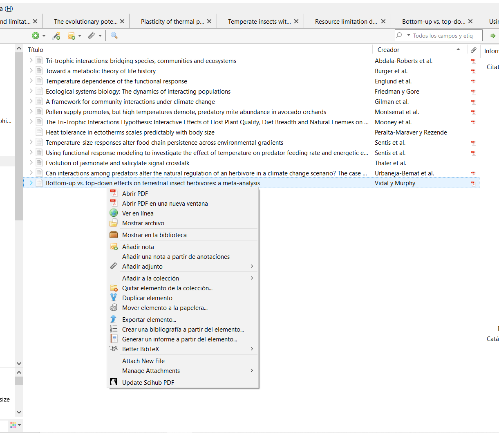
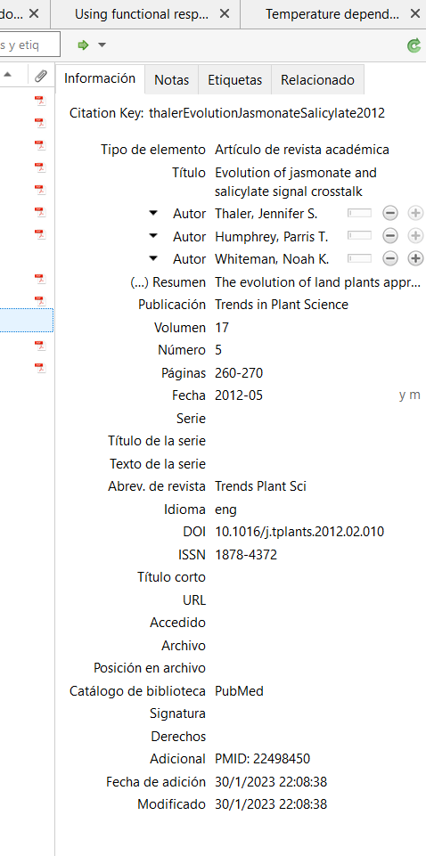
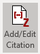
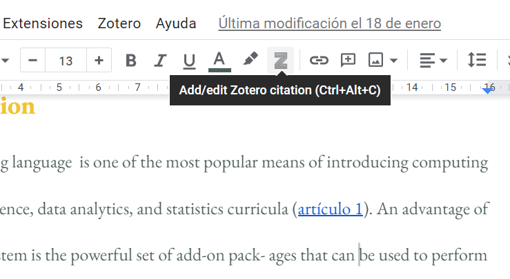
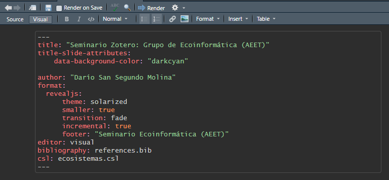
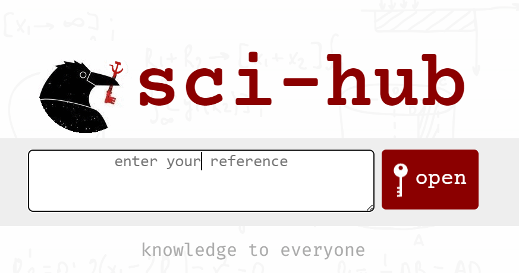
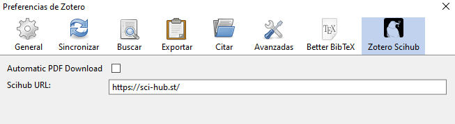

Seminario Zotero: Grupo de Ecoinformática (AEET)
Gestionar la literatura permite:
Guardar y clasificar referencias: por campo, utilidad (introducción, proyecto, etc),
Divergencias –identificar qué papers más versátiles nos sirven para distintos temas o trabajos– y convergencias: aunar papers a los que llegamos por distintas vías pero que nos sirven para un mismo marco teórico.
Elaborar bibliografías : Podemos combinar con procesadores de texto o con LaTeX, RMarkdown o Quarto, entre otros, para construir bibliografías de forma rápida y eficiente adaptándonos a los requisitos que nos pida la revista o la entidad en cuestión.
Colaborar científicamente para hacer una ciencia colaborativa, en la que las distintas investigadoras podamos compartir entre nosotras de forma organizada y accesible nuestra maleta de referencias, emplear herramientas como Zotero Groups puede ser muy útil.
1. ¿Por qué Zotero? :
- Software libre y de código abierto: la comunidad amplía sus posibilidades cada día. Frente a Mendeley (propiedad de Elsevier), la comunidad de Zotero aspira a mejorar su utilidad cada día siempre de forma gratuita.
- Gratuito: aunque tiene un límite bajo (300MB) de sincronización de archivos con el servidor de Zotero en la nube, pero en tu dispositivo puede superarse de forma ilimitada.
1. ¿Por qué Zotero? :
- Extensiones para Chrome y Firefox: se descargan aquí.
- Insertar citas bibliográficas en Google Docs, en Word y en LibreOffice: los complementos se descargan automáticamente con el cliente de escritorio.
- También en Herramientas > Complementos > configuración icono > añadir desde archivo para hacerlo manualmente con cualquier add-on.
- Zotero - RStudio-posit: Es el único gestor bibliográfico por el momento que está integrado en RStudio (R Markdown y Quarto), más allá de paquetes como
knitcitations.

2. Interfaz de Zotero :

Barra de navegación: (izquierda)
Carpetas y colecciones, papelera y cajón de sastre (con literatura sin clasificar
Búsqueda por etiquetas (abajo)
Click derecho:
Exportar a otros formatos (csv, BibTeX, RefWorks, html, Wikipedia citations) o en Zotero RDF.
Crear un informe (títulos, autoras, resúmenes y enlaces), útil para recomendar lecturas, para docencia o para ampliar información de bibliografía que nos pidan tras una charla, por ejemplo).
2. Interfaz de Zotero :

Panel de referencias: (centro)
- Utilizar la referencia en la carpeta actual para operar con ella, así como ordenar por título o autor.
- También permite descargar el pdf via sci-hub con el add-on instalado a partir de un repositorio creado por la comunidad (Willis, 2022).
2. Interfaz de Zotero :
Panel de información: (derecha)
Información: con metadatos (editables) sobre el artículo. Normalmente solo habrá que editar aquellos que Zotero no detecte bien (blogs, algunos libros, etc), que guarda como snapshot.
Notas: si queremos anotar esa bibliografía, incorpora un miniprocesador de texto.
Etiquetas: muy útil para clasificar los artículos de nuestras bibliotecas y facilitar el flujo de trabajo, el acceso a referencias y la organización de nuestra literatura. Incluye las que vienen con el artículo predeterminadas y las que creamos nosotras.
Relacionados: nos permite conectar referencias de artículos que decidamos relacionar. Muy útil para facilitar la cohesión al redactar.

3. Cómo añadir referencias a Zotero
Hay varias formas de añadir referencias en Zotero:
Mediante identificadores: Mediante el botón varita mágica se pueden añadir distintos elementos con el DOI, el ISBN, etc.
Extensiones de Chrome y Firefox:
Abrimos Zotero en nuestro dispositivo.
Seleccionamos la carpeta en la que queremos guardar la referencia
En nuestro navegador, en la web de la revista con el artículo pulsamos el botón Save to Zotero de la barra de herramientas.
Nota: conviene evitar pulsar el botón en la versión de acceso digital al artículo, pues a veces da error. Es mejor hacerlo en la web principal del artículo.
Ejemplo del botón Save to Zotero
3. Cómo añadir referencias a Zotero
Añadir desde un documento: Se pueden añadir uno o varios documentos arrastrándolos desde una carpeta donde los tengamos guardados a Zotero.
Importar una bibliografía completa: Se puede importar bibliografía desde otro gestor bibliográfica, desde una búsqueda que hayamos realizado (por ejemplo en Web of Science en formato .RDF) o para citar los paquetes de R que hayamos usado para nuestro manuscrito.
4. Citar
a) Estilos de cita
En primer lugar, es necesario escoger el estilo de citación. Hay un repositorio de estilos de Zotero desde el que se pueden descargar distintos formatos en función de los estilos, distintos campos y/o el título de la publicación a la que queremos enviar nuestro manuscrito. ¡Actualmente hay más de 10000 estilos!
También se pueden añadir de la misma forma desde la aplicación de escritorio de Zotero en Editar > Preferencias > Citar > Obtener estilos adicionales
- Ejemplo: Revista Ecosistemas. descarga aquí desde el navegador. Se recomienda hacerlo así, ya que permite tanto añadirla a Zotero (aceptando el cuadro de diálogo emergente al clickar), si éste está abierto, como descargar el **archivo *.csl** que necesitaremos para poder citar con RMarkdown/Quarto.
b) Citar en Word/LibreOffice/GDocs
Tras instalar los correspondientes plug-ins, se incluyen las citas en su lugar del texto correspondiente y se añaden con los botones de Add/Edit Citation
 Word

c) Insertar bibliografía/referencias en Word/LibreOffice/GDocs
Situando el cursor en la sección donde vayamos a redactar la bibliografía, clicamos en el botón y comprobamos.
Nota: En muchos casos los nombres científicos no están en cursiva en los títulos, para poner los nombres en cursiva hay que añadir al inicio y al final del nombre:
# <i>nombre de la especie</i>
# ejemplo: <i>Spodoptera frugiperda</i>Hay información más detallada sobre los estilos, otras opciones y botones adicionales en LibreOffice que se pueden consultar aquí.
5. Citas y bibliografía con RMarkdown/Quarto
Es mucho más fácil con visual editing mode que se incluye en las versiones RStudio v1.4. y superiores.
- Previo:
Tener instalada la última versión de RStudio (facilita utilizar el Visual Mode de RMarkdown).
(recomendable, no obligatorio) instalar BetterBibTeX para Zotero (disponible aquí).
Modificar el YAML en RMarkdown: es necesario añadir dos elementos
bibliography``: references.bib: es un apartado con la carpeta de bibliografía que se añade automáticamente al incorporar citas. Será siempre, en todos nuestros Rmds, igual.csl: ecosistemas.csl: debemos descargar el archivo .csl de nuestro estilo de citatión deseado (en este caso, el de Ecosistemas) y debemos alojarlo en la carpeta del projecto en la que esté el.Rmd/.qmd.
## 
- Añadir citas en el manuscrito/presentación: se hace clickando en Insert > Citation o en el logo “@”. Ejemplo :
“Un buen código de programación en ciencia debería reunir tres objetivos: comunicación clara, formato unificado y abstracción” (Filazzola and Lortie, 2022).
“Según Filazzola and Lortie (2022), un buen código de programación en ciencia debería reunir tres elementos: comunicación clara, formato unificado y abstracción”.
Además, para citar paquetes de R, esta ventana incorpora a la izquierda una columna de R Package (ej. R Core Team (2022) ; Wickham et al. (2019); McLean (2017).
La bibliografía se añade automáticamente al final del documento
Extra: Sci-Hub + Zotero
Recientemente Willis (2022) ha creado una herramienta en este repositorio que permite instalar un add-on en Zotero que lo conecta automáticamente a Sci-Hub. Esto tiene varias utilidades:
Ciencia Abierta: Permite descargar vía Sci-Hub cualquier artículo disponible en la plataforma sin tener que copiar DOIs ni similares simplemente clickando en el botón de Zotero de tu navegador directamente desde la web de la revista.
Integrar lectura, anotacion y gestión bibliográfica: en cualquier dispositivo se puede descargar un paper referenciado en una carpeta de zotero con un simple click derecho > Update SciHub y anotarlo al instante con el lector integrado de Zotero.


Extra: ZotFile: unlimited synch
En su web personal, Kashnitsky (2019) explica cómo esquivar el límite de 300MB de archivosusando ZotFile y una nube de almacenamiento.
Tras configurarlo siguiendo sus pasos: proponemos la siguiente rutina de trabajo:
Conseguir el pdf del artículo (ej. vía sci-hub).
Click derecho en la referencia de Zotero > Manage Attachments > Rename & Move
Abrirlo con el visor de PDF de Zotero y anotar lo que queramos
Pulsamos Archivo > Exportar PDF y sobrescribimos el pdf con el mismo nombre en la carpeta sincronizada con nuestra nube… y ¡listo! ya tenemos todo el proceso integrado.
Otros recursos:
Guía similar a esta (Higgins, 2022)
Cómo citar paquetes de R y modificar apéndices en la bibliografía (Riederer, n.d.)
Página con información sobre cómo utilizar Visual R Markdown.
Editor de csl: https://editor.citationstyles.org/about/
Paquete rbbt para un formato similar al de Word/LibreOffice: https://github.com/paleolimbot/rbbt explicado en el blog del autor Dunnington (2020).
Quarto-Zotero-Better BibTeX aquí y aquí.
Multitud de plug-ins con un gran abanico de funcionalidades: https://www.zotero.org/support/plugins
Y por si aún no te ha convencido, deja que este vídeo lo haga con la melodía de Frozen.
Gracias por vuestra atención!
References
Seminario Ecoinformática (AEET)